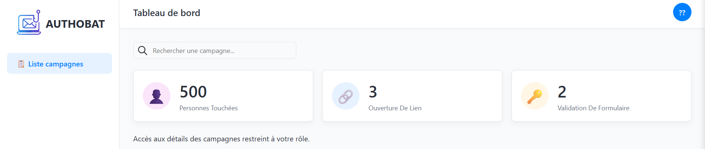

Phishing Awareness
En coursCybersécurité, Web
Recherche Contrat de Professionnalisation • Septembre 2026 • 1 An
Étudiant de deuxième année en ingénierie informatique à Polytech Dijon, je suis passionné par l'architecture logicielle et l'apprentissage automatique.
Fort d'une expérience variée allant du stage ouvrier dans le nucléaire à Framatome à une future expérience internationale en Malaisie, j'ai développé une grande capacité d'adaptation. Je maîtrise l'anglais (B2) et je cherche aujourd'hui à mettre mes compétences en Web, Java, C++ et Cloud au service de projets innovants.
Contrat de Professionnalisation sur 1 an.
Recherche et développement en contexte international.
Gestion et coordination d'essaims de drônes.
Gestion du service Caisse, préparateur de commande et service Location.
Développement de compétences en service client, gestion du stress et travail d'équipe.
Spécialisation Dév. Logiciel & IA.
Assemblage de composants nucléaires, sécurité industrielle.
Cybersécurité, Web
Python, Cloud Computing
HTML, CSS, JS

Python, Pygame
Python
Je suis joignable par mail (thomas_loctin@etu.ube.fr) ou via le formulaire ci-dessous.
Vous pouvez également me trouver sur
LinkedIn.
Statut : Terminé
Description : Projet de robotique éducative utilisant une plateforme de développement pour créer un robot interactif. Ce projet a permis d'explorer les concepts de programmation embarquée et d'interaction homme-machine. Le but était de créer une application pour contrôler le robot et lui faire exécuter des tâches simples, tout en apprenant les bases de la robotique et de l'IA. Le projet a été réalisé en collaboration avec une équipe d'étudiants passionnés.
Statut : Terminé
Description : Développement d'un jeu de rôle (RPG) en Python avec Pygame. Ce projet permet de créer une expérience de jeu immersive dans un monde fantastique dans un style dialogue/actions. Le projet a été réalisé en collaboration avec un autre étudiant, et a permis de développer des compétences en programmation orientée objet, en design de jeu et en gestion de projet.